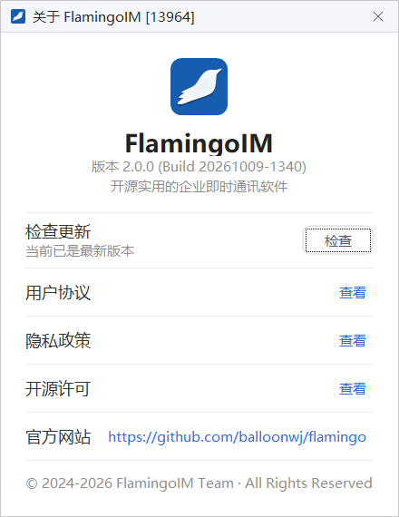
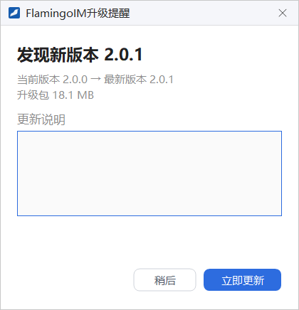

关于与自动升级
本章介绍如何查看客户端的版本号、手动检查更新，以及管理员发布新版本后客户端如何提醒你升级、如何完成安装。
- 适用：全体员工
- 新版本由平台管理员发布，见「客户端版本与自动升级」
「关于」窗口

在主面板左下角的系统菜单里选最后一项 关于 FlamingoIM，打开「关于」窗口：
- 版本号：图标下方显示「版本 2.0.0 (Build 20261009-1340)」这样的版本号和 Build 号。向管理员反馈问题时，请一并提供这一行。
- 检查更新：点 检查 立即检查是否有新版本，结果在升级提醒窗口里显示，见下文。
- 用户协议、隐私政策、开源许可：暂未开放，点 查看 会提示「功能开发中，敬请期待。」
- 官方网站：点链接在浏览器里打开项目网站。
菜单项和窗口标题里的产品名称由企业部署时设置，你看到的可能不是「FlamingoIM」。
自动升级
客户端在登录前和登录后都会检查是否有新版本：点 登 录 时，登录按钮会短暂显示「正在检查更新...」；登录成功后还会再检查一次。也可以在「关于」窗口里手动检查。发现新版本时，会弹出「升级提醒」窗口：

- 标题写明「发现新版本」和版本号。
- 下方显示「当前版本 → 最新版本」和升级包的大小。
- 更新说明 区显示管理员填写的本次更新内容。演示截图里这一区是空白的，实际以管理员填写的内容为准。
- 稍后：暂不升级，关闭窗口，登录前弹出时会继续登录。
- 立即更新：开始下载升级包。
下载与安装
- 点 立即更新 后，窗口显示下载进度，如「正在下载 6.2 MB / 18.1 MB」。
- 下载完成后提示「下载完成，正在启动安装...」，不需要再确认。
- 客户端随即退出，由升级程序替换程序文件，完成后自动重新启动客户端。
如果升级包已经提前在后台下载好，升级提醒窗口会直接显示「下载完成，可以安装了」，按钮为 立即重启并安装，点它即开始安装。下载失败时提示「下载失败，请重试」，可以再点一次 立即更新。手动检查时如果已经是最新版本，窗口会说明这一点，按钮显示为 知道了。
强制升级
管理员可以把某个版本设为强制升级。遇到强制升级的版本时：
- 升级提醒窗口没有 稍后，也不能关闭；窗口显示在最前面，客户端的其他窗口暂时不能操作。登录前遇到强制升级时，必须升级后才能登录。
- 升级包会自动下载，下载完成后自动安装并重启客户端，你不需要做任何操作。
- 只有在升级包信息不完整、无法自动升级时，窗口才提供 退出程序 按钮。这种情况请联系管理员检查发布的版本。
没有收到升级提醒？升级提醒依赖管理员在平台上发布新版本。如果同事已经升级而你没有收到提醒，可以在「关于」窗口里点 检查 手动检查一次。